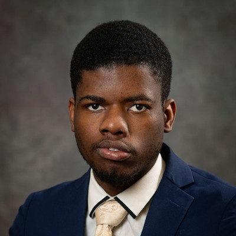

World Cup 2026 Prediction Model
Poisson, tree and neural network ensemble with incremental retraining and a live Flask dashboard. Turned $50 into $400 on Kalshi.
GitHub →Two sides to my coin
Video editor and Computer Science student at Rowan University. I build personalized systems, whether that is a fashion engine or a cinematic brand story.
Selected work
Festival recaps, artist moments and brand edits shot and cut by me under Jedit.Jed. Tap a clip to play it.
Freelance reach
Drag the handle. The left side is a flat, low-contrast preview made in the browser so you can see what grading adds. The right side is my finished grade.
Builds
Co-founder, Modachron
Modachron learns how you dress, and ModaShop helps you shop based on how you dress. Free on iOS and Google Play. I also built a website revamp preview and a 3D walk-in closet preview for the brand.
modachron.com → Revamp preview → Closet preview →What I do there
I turn how people dress into rules for the outfit engine, run the Supabase and PostgreSQL backend, and edit the product videos.
Web work
Live GitHub Pages work. Client pitch builds are labeled Concept. Sample menus and prices are placeholders, not live business data.
Poisson, tree and neural network ensemble with incremental retraining and a live Flask dashboard. Turned $50 into $400 on Kalshi.
GitHub →Live captions in Spanish, French, Yoruba and Igbo with a delay of about 1 to 2 seconds. Not launched yet.
GitHub →"Shazam for clothes." Takes a photo, finds each clothing item with Google Lens through SerpAPI, falls back to CLIP and FashionCLIP, and matches items to products you can buy. Built with David.
A VHS-style explorable 3D map of my video work with touch navigation, a drop-folder publishing script, and the Afro+ Fest Summer 2026 recap as the featured showreel.
GitHub → Live →A web app where a doctor creates a 30-item assessment with a secret link that expires in 7 days, then records the patient's score.
GitHub →Controller and view logic for a low-level clock: VGA text-mode rendering, cursor updates over port I/O, AM/PM and 24-hour modes.
Saved every week
Experience

About
I build personalized systems. Some days that means a rule-based fashion engine or an automation that gives a team its week back. Other days it means a festival recap cut to the beat. Same habits on both sides: plan it, test it, ship it.
Education
Rowan University, graduating Dec 2026
Operating Systems, Database Systems, Software Engineering, Data Structures and Algorithms
Rowan College of South Jersey, 2021 to 2024
Toolkit
Premiere Pro, After Effects, CapCut, Sony FX30 and A7 III. Lighting, audio and camera on every shoot.
English, French, West African Pidgin